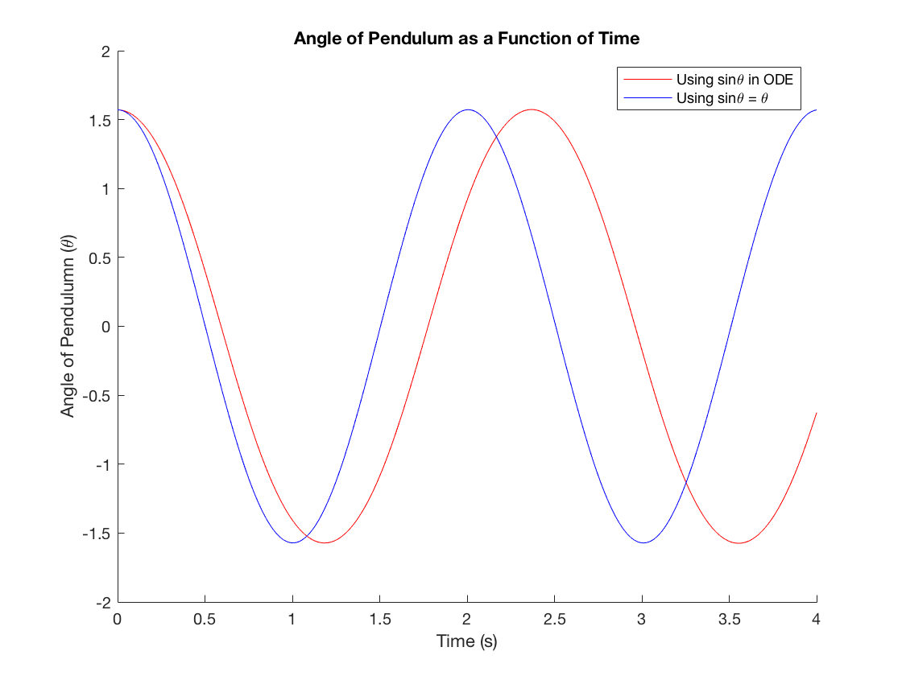
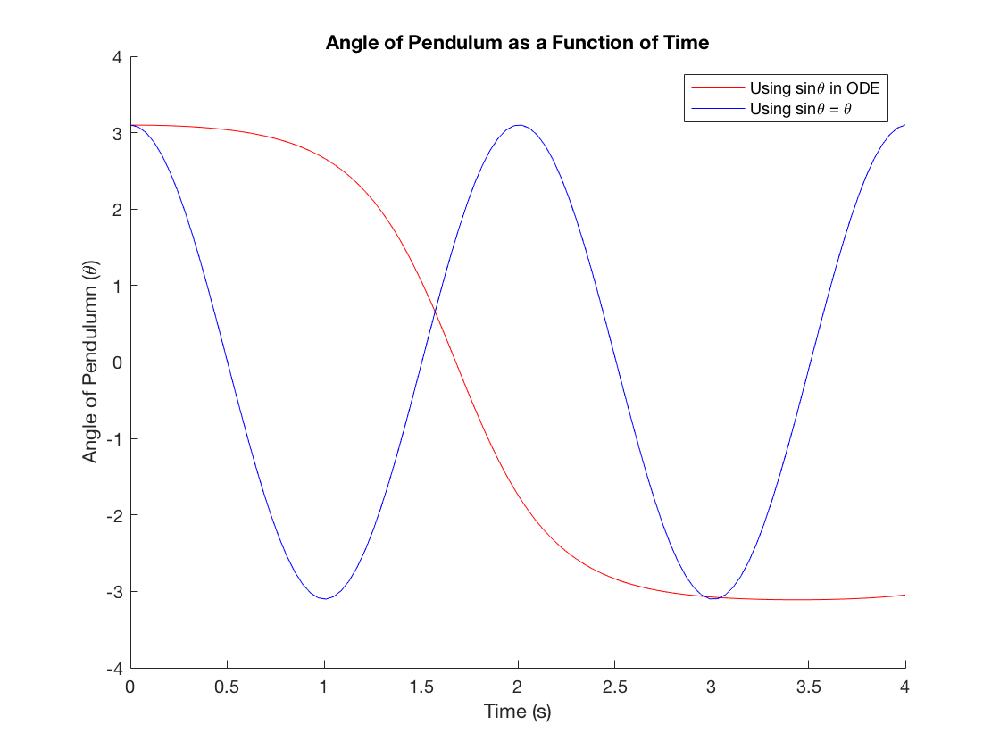
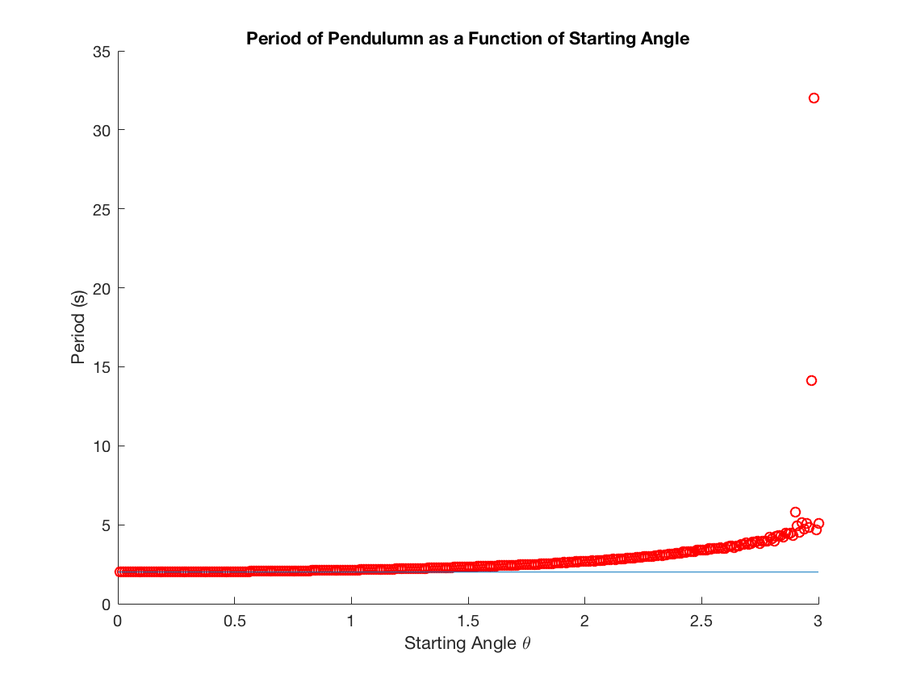

Fowels and Cassidy Problem C 3.1
Luke Polson V00849485
Contents
PART A
Defines appropriate constants
g=9.81; L=1; omega2=g/L; theta_0=pi/2; omega_0=0;
Solves ODE without approximation
f1 = @(t,y)[y(2);-omega2*sin(y(1))]; sol1 = ode113(f1, [0 10], [theta_0; omega_0]); x1 = 0:0.01:4; y1 = deval(sol1,x1,1);
Solves ODE with approximation
f2 = @(t,y)[y(2);-omega2*y(1)]; sol2 = ode113(f2, [0 10], [theta_0; omega_0]); x2 = 0:0.01:4; y2 = deval(sol2,x2,1);
Here is the plot of the approximate and exact solution
figure('name','Part A','NumberTitle','on'); hold on; title('Angle of Pendulum as a Function of Time') ylabel('Angle of Pendulumn (\theta)') xlabel('Time (s)') plot(x1, y1, 'r'); plot(x2, y2, 'b'); legend('Using sin\theta in ODE','Using sin\theta = \theta') hold off;
PART B
We change the initial condition of the starting angle
theta_0=3.1;
Solves ODE without approximation
f1 = @(t,y)[y(2);-omega2*sin(y(1))];
sol1 = ode113(f1, [0 10], [theta_0; omega_0]);
x1 = linspace(0,4,1000);
y1 = deval(sol1,x1,1);
y1correct = linspace(0,7,1000);
%Corrects so that -pi<theta<pi
Solves ODE with approximation
f2 = @(t,y)[y(2);-omega2*y(1)]; sol2 = ode113(f2, [0 10], [theta_0; omega_0]); x2 = linspace(0,4,100); y2 = deval(sol2,x2,1);
Plots theta as a function of time
figure('name','Part B','NumberTitle','on'); hold on; title('Angle of Pendulum as a Function of Time') ylabel('Angle of Pendulumn (\theta)') xlabel('Time (s)') plot(x1, y1, 'r'); plot(x2, y2, 'b'); legend('Using sin\theta in ODE','Using sin\theta = \theta') hold off;
PART C
We define an array of starting angles theta and periods. Note that the values in the array of period will be changed in a bit.
theta0=[0:0.01:3.0];
period=[0:0.01:3.0];
approxperiod=2*pi*sqrt(L/g);
i=1; %Index Of Period Array
The loop below loops over all initial conditions, solves the ODE, and finds the period for each solution. The value of the period is put in the period array.
for theta = theta0 %Finds Solution of Motion for given initial condition theta f1 = @(t,y)[y(2);-omega2*sin(y(1))]; sol1 = ode113(f1, [0 100], [theta; omega_0]); x1 = 0:0.1:100; y1 = deval(sol1,x1,1); %Finds the period of the Pendulum for given solution ac=xcorr(y1,y1); [~,locs]=findpeaks(ac); T=mean(diff(locs)*0.1); period(i)=T; i=i+1; end;
Plots Period as a Function of initial angle theta
figure('name','Part C','NumberTitle','on'); hold on; title('Period of Pendulumn as a Function of Starting Angle') xlabel('Starting Angle \theta') ylabel('Period (s)') scatter(theta0, period, 'r'); refline(0,approxperiod); hold off;
Finds the value of theta0 were approximation is worse than 2%
i=1; for periodcurr = period if (periodcurr/approxperiod>1.02) disp(theta0(i)); break end i=i+1; end;
0.5700